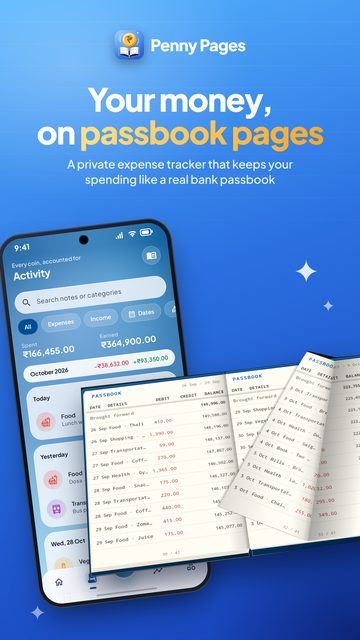

I'm an Android developer from Jaipur. Until February 2026 I worked at Polaris Smart Metering,
where I built the app that electricity technicians use to read smart meters in the field, plus
the Node.js backend it talks to.
These days I'm working on my own apps and looking for my next Android role. I mostly write
Kotlin and Jetpack Compose now, but I've spent plenty of time in old Java/XML codebases too.
Work
Polaris Smart Metering SDE-I
May 2024 – Feb 2026
My main project was Meter Setu. A technician plugs the phone into a meter with a
serial (UART) cable, the app reads it over DLMS, and the readings get synced to the utility's
Head End System through a Node.js + PostgreSQL service I wrote. It went out to 5 state projects
and is used in UP, West Bengal, Manipur and Ladakh.
(Gomati,
Saryu)
The hard part was the protocol. We used the Gurux DLMS library, which has very few Android
examples, so a lot of it was reading their source, testing against real meters on my desk and
asking questions on the Gurux forum until things worked.
I also looked after two older apps: a
field force app for
Ladakh (Android + Django) and a
consumer app
for South Bihar. That was mostly crash fixing on cheap phones, cleaning up 10k-line files,
a Razorpay bug that was stopping people from paying, and regular Play Store releases.
Both ended up under 1% crash rate.
Putatoe Solutions Android intern
Feb – Mar 2024
Two months, remote. Built a small
manager portal app
with REST APIs and fixed layout and navigation bugs in their shopping app.
Things I've made

Penny Pages in testing
An offline expense tracker. I first wrote it in 2023 as a simple XML + SQLite app, then rebuilt
it this year from scratch. You add entries with a calculator keypad, set a budget, and can view
your month as a bank-passbook style ledger. It has recurring payments, savings goals, a home
screen widget and 28 languages.
A status saver for WhatsApp. My first app on the Play Store under my own developer account
(Bits4Bytes). It has no internet permission at all. Most of the effort went into storage:
Android 11+ doesn't let apps create folders freely, and Play rejects "all files access" for
this kind of app, so it walks you through granting one folder via the system picker and falls
back to MediaStore until you do.